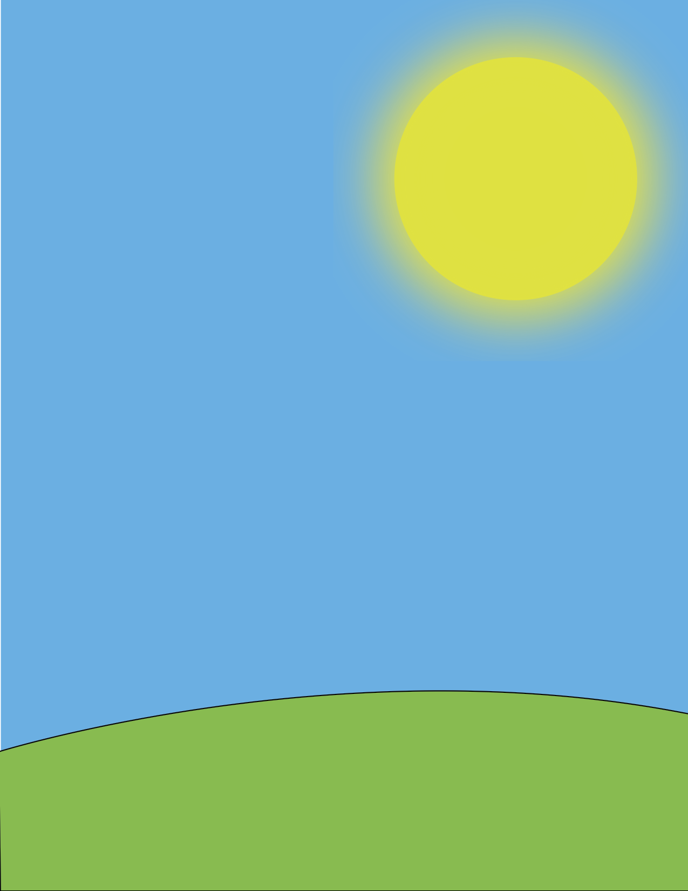
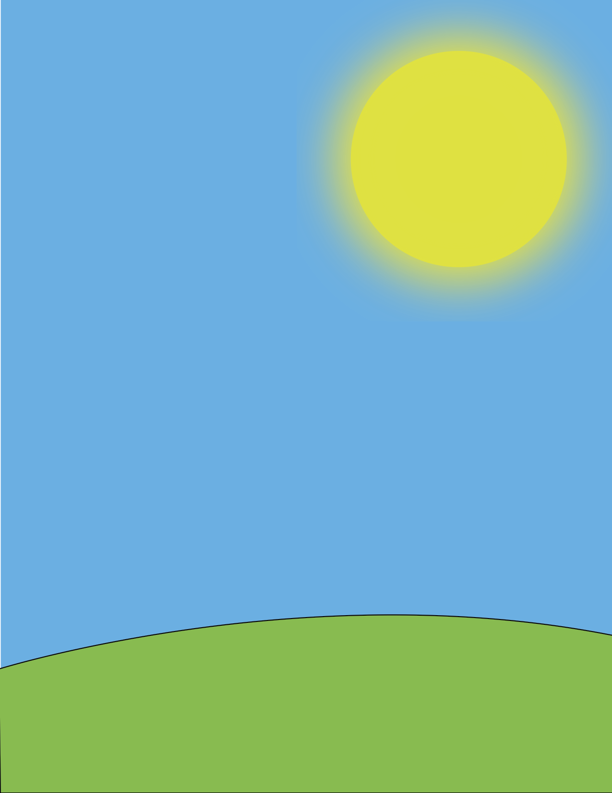

Picture Recreation Steps
- Open Adobe Illustrator
- Click "Create New"
- For the dimension size, use the default 8.5inches x 11inches
- Go to "View" -> "Rulers" -> "Show Rulers"
- Start by selecting the rectangle tool
- Go to the bottom of the tool bar and set the stroke color to none and the fill color to #34B2E6. This will make the rectangle have a blue fill color.
- Click and drag from the top left corner to the bottom right corner
- Select the pen tool
- Set the stroke color to black (#000000) and set the fill color to #6ABD45. This will give the shape a green color.
- Click to the left of the canvas at 10.25 inches
- Click to the right of the canvas to make the peak of the hump in the center of the canvas
- Press down on Shift and click to the corner of the canvas
- Press down on Shift and make a horizontal line underneath the canvas
- Click on the beginning point of the pen shape
- Hold down on the rectangle tool in the tool bar and select the ellipse tool
- Change the stroke color to none and set the fill color to #DFE223
- Hold down on Shift and create a circle with a diameter of 3 inches and place it in the top right corner
- Hold down on Shift and create a second circle with a diameter of 3.5 inches
- Select the bigger circle and go to "Effect" -> "Blur" -> "Gaussian Blur"
- Set the radius in Gaussian Blur to 90 pixels
- Select the selection tool and position the blurred circle over the smaller circle with their centers overlapping
 
